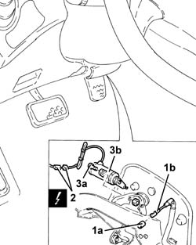

1068A52 potentiometer on accelerator pedal - r r for manual gearbox with hydraulic selection versions
- Path
- Procedures > 10 ENGINE > 1068 ACCELERATOR CONTROLS > 1068A accelerator pedal control > 1068A52 potentiometer on accelerator pedal - r r for manual gearbox with hydraulic selection versions
- Kind
- repair procedure (removal / refitting; the operation number is the code)
- Applies to
- all engines; all production periods
- Interactive page
- https://sloeber94.github.io/elrnDB-a156/en/#/3237694
Applies to: all engines; all production periods; only with equipment: Smart gearbox
 Removing
Removing
 Refitting
RefittingEnsure that the ignition key is in the OFF position, then disconnect the negative (-) battery terminal.
 | Name | Connector |
|---|---|---|
- | Battery |
Remove the cover under the dashboard.
1. Remove the clip (1a) and disconnect the rod (1b) from the accelerator pedal potentiometer.
2. Release the electrical wiring for the accelerator pedal potentiometer from the fixing bands, then disconnect the electrical connection.
| Name | Connector |
|---|---|---|
2 | Accelerator pedal potentiometer |
3. Undo the bolts (3a) and remove the accelerator pedal potentiometer (3b).

Applies to: all engines; all production periods; only with equipment: Smart gearbox
Refitting
RemovingFit the accelerator pedal potentiometer and secure with its bolts.
Connect the electrical connection for the accelerator pedal potentiometer and fix the electrical wiring using the bands.
Connect the rod to the accelerator pedal potentiometer and fix it using the clip.
Fit the cover underneath the dashboard.
Connect the negative (-) battery terminal.
When refitting the accelerator pedal potentiometer, adjust it as described below.
Make sure that the ignition key is in the OFF position.
Connect the tool to the diagnostic socket and place the knob in position 3.
 | Name | Country |
|---|---|---|
- | MPX 97 switch | 1.806.365.000 |
Connect the Examiner diagnostic equipment.
Turn the ignition to the ON position).
Using the Examiner, enter the "Parameters" field.
Press "Selection" and select the "Accelerator position track 1" parameter.
Check that the potentiometer's calibration conforms to the specified values:
when idling (accelerator pedal released), < 17%
fully open (accelerator pedal fully depressed), 73% ¸ 78%.
If the setting is not as specified, adjust the accelerator pedal travel by means of the accelerator pedal travel stop.
Remove the diagnostic equipment.